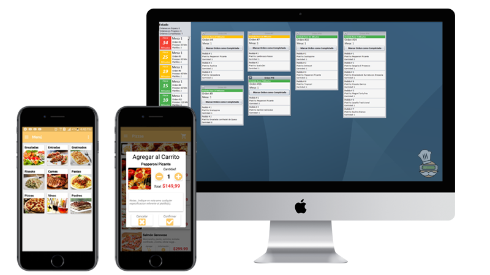

Control Escolar Mejorado
Plataforma diseñada para la Facultad de Ingenieria Mecanica y Electrica Unidad Norte de Monclova, Coahuila Mexico. Integra un sistema web y una aplicacion movil para controlar la asistencia de alumnos a traves de codigos QR, ademas de manejar horarios, examenes y otros aspectos.
Tecnologia Utilizada
Testidy utiliza ASP.NET con C# en el backend complementado con jQuery en el frontend. La aplicación movil fue creada con Android Studio (Java). La comunicacion entre ambas partes se realiza a traves de Web Services con SOAP. Para la base de datos se utilizo SQL Server.